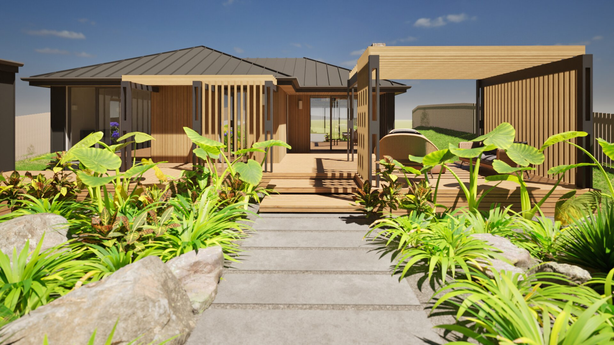
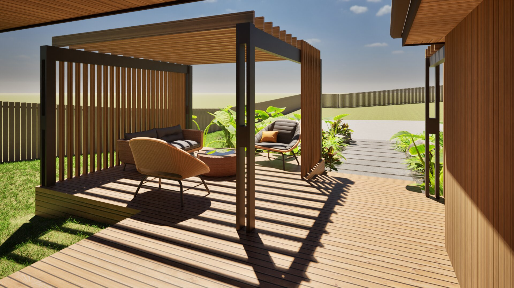
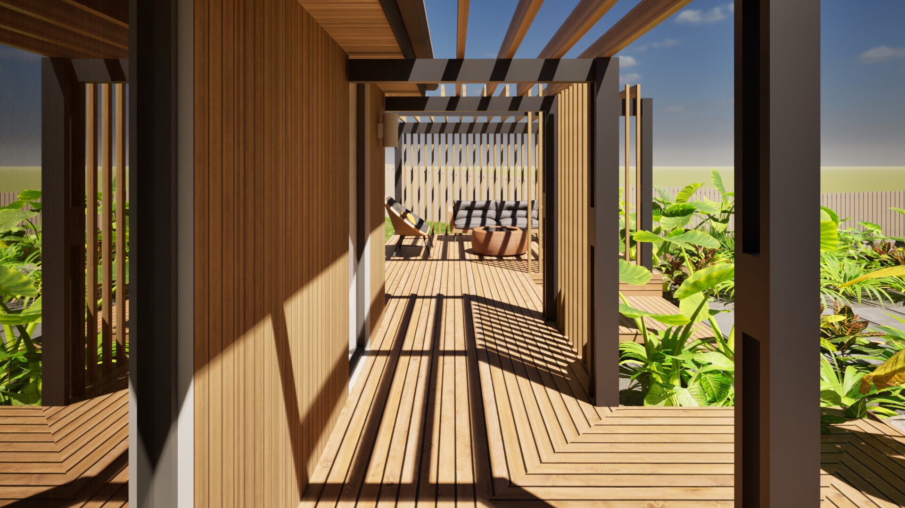
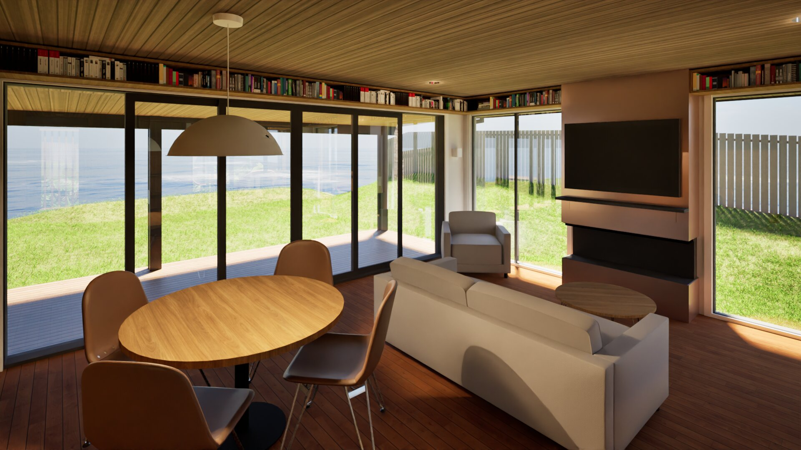

Residential Alteration · Kapiti Coast
Beachfront Cottage Alteration
An original 1950's beachfront cottage with many site constraints and planning restrictions has posed a challenging yet exciting opportunity to transform the life of this existing cottage, while greatly improving the overall functionality, thermal performance and aesthetics. The cottage has a small building footprint and altering the existing internal layout is important to add functionality, natural light and beauty to each individual space. It has been a pleasure working with my client, navigating the design challenges and building iterations to date.




Gerard Rahman | Beachfront Cottage AlterationI worked with Karyn on a cottage renovation. Whilst it was a very challenging project being situated close to the sea, I thoroughly enjoyed working with Karyn because she balanced raw enthusiasm for the project and all the possibilities it holds with practical, down to earth realism. Ultimately, Karyn saved me significant funds by testing ideas with Kāpiti Council upfront so we did not invest time going down paths which would never have been approved and she fought valiantly on my behalf. I deeply value this. Her attention to detail is superb so that layouts are everyday practical, not just aesthetically pleasing (which as the client, I can get carried away with the latter to the detriment of the former). Critically, Karyn has a design art perspective which I saw in ideas that continuously surprised me, emphasising the original design whilst sympathetically being cohesive. I wholeheartedly recommend Karyn and will work with her again on another project.